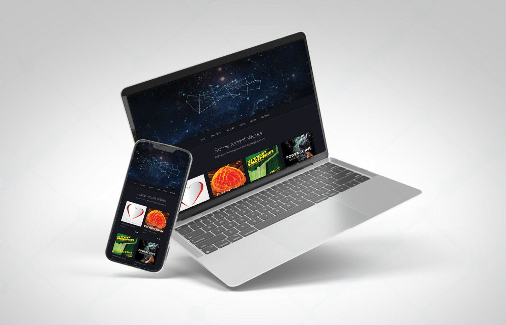

Kreation einer digitalen Markenidentität für DJ DECK
Über das Projekt
DJ DECK, ein Hobby-DJ, der gelegentlich auf kleineren Drum’n’Bass-Veranstaltungen auflegt, suchte nach einem UI/UX-Designer, um eine eigene Webpräsenz aufzubauen. Ziel war es, bereits gespielte Sets bereitzustellen, künftige Auftritte zu kommunizieren und eine ansprechende, funktionale Plattform für Bookings zu schaffen.
Timeframe
3 Monate 2016
My Role
UI/UX Designerin (Freiberuflich)
Tools
- Figma
- Adobe XD
- VS Code
- GitHub
Die Herausforderung
Vom Underground ins Rampenlicht
Die größte Herausforderung bestand darin, die Persönlichkeit des DJs zu verstehen und sie in ein individuelles Webdesign zu übersetzen. Dabei sollten sowohl die Energie der Musik als auch der persönliche Stil von DJ DECK in der digitalen Markenidentität spürbar werden. Es fehlte an einer klaren visuellen Sprache, an Struktur und an einer Plattform, die Musik und Informationen übersichtlich präsentiert.
Prozess & Lösung
1. User Research & Analyse
- Interviews mit dem DJ zur Definition der Ziele und Werte
- Benchmarking mit vergleichbaren Künstler:innen
- Analyse der Zielgruppe: Veranstalter:innen, Booker:innen und Fans
- Untersuchung relevanter Keywords für mehr Sichtbarkeit
- Technische Anforderung: Lagfreier Musik-Player
2. Konzept & Gestaltung
- Entwicklung eines modernen, klaren Interface Designs für Desktop, Tablet und Mobile
- Erstellung eines Moodboards basierend auf Clubästhetik & Tech-Vibes
- Design einer dunklen UI mit leuchtenden Akzenten, inspiriert von Lichtstimmungen im Club
- Typografie-Mix: Technoid & gut lesbar
3. Umsetzung
- One-Page-Webdesign mit Fokus auf schnelle Informationsvermittlung
- Integrierter Audio-Player zur Präsentation der Sets
- Tourdaten-Modul inkl. Kartenfunktion
- Galerie für Fotos & Video-Highlights
- Direktes Booking-Formular
- Entwicklung & Prototyping in mehreren Phasen mit User-Tests

Ergebnisse
Von der Idee zur erkennbaren Marke
- Deutlicher Wiedererkennungswert durch konsistentes Branding
- 40 % mehr Booking-Anfragen innerhalb der ersten drei Monate
- Professioneller Online-Auftritt zur Unterstützung bei Veranstalter-Anfragen
- Erweiterbares System für zukünftige Projekte wie Merch, Blog, Social Media
Fazit
Durch gezielte UX/UI-Maßnahmen wurde für DJ DECK eine digitale Bühne geschaffen, die Professionalität, Charakter und Benutzerfreundlichkeit miteinander vereint. Die neue Plattform ist nicht nur funktional, sondern transportiert die Leidenschaft für Musik und Performance – authentisch, klar und zukunftsorientiert.